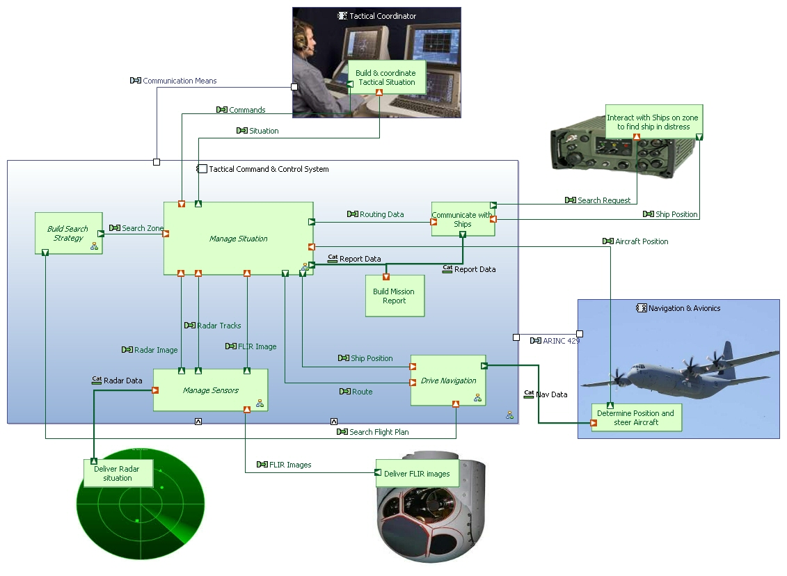

Much more than just yet another modelling tool, Capella is a model-based engineering solution that has been successfully deployed in a wide variety of industrial contexts. Based on a graphical modelling workbench, it provides systems, software and hardware architects with rich methodological guidance relying on Arcadia, a comprehensive model-based engineering method.

The Capella workbench is an Eclipse application implementing the Arcadia method providing both a Domain Specific Language (DSL) and toolset which is dedicated to guidance, productivity and quality. Intuitive model editing and viewing capabilities help engineers focus on the design and description of the system and its architecture.
The capabilities of Capella focus on helping engineers design better architectures through:
The Arcadia/Capella DSL is inspired by UML/SysML and NAF standards, and shares many concepts with these languages. It is the result of an iterative definition process driven by systems and software architects working in a broad spectrum of business domains (transportation, avionics, space, radar, etc.).
The Arcadia/Capella DSL enforces an approach structured on successive engineering phases which establishes clear separation between needs (operational need analysis and system need analysis) and solutions (logical and physical architectures), in accordance with the IEEE 1220 standard. Arcadia and Capella cover all aspects of standard architecture modelling in each engineering phase including: